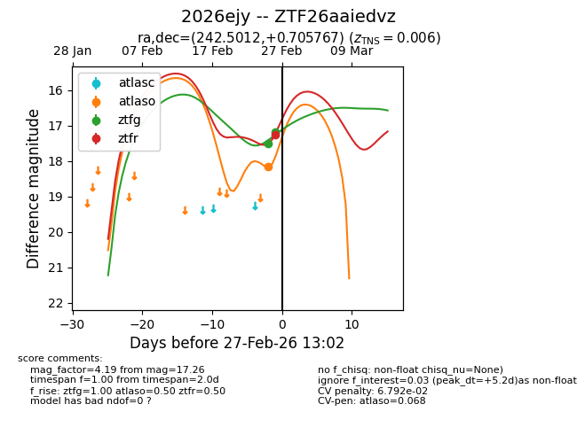
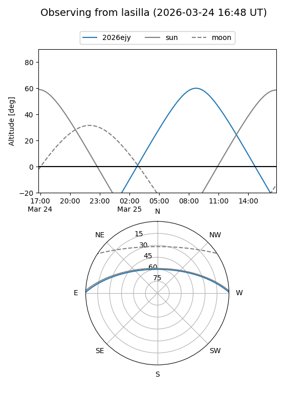
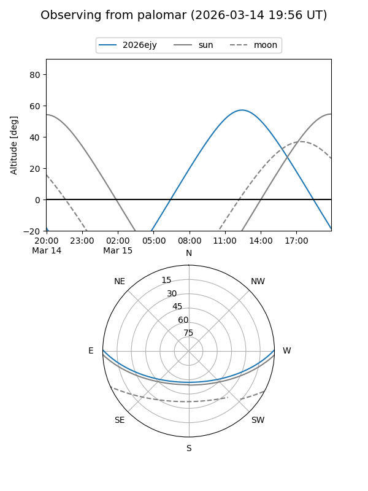

2026ejy
Target 2026ejy at 2026-02-27 13:03
Aliases and brokers:
FINK: link
Lasair: link
ALeRCE: link
TNS: link
YSE: link
alt names
ZTF26aaiedvz (ztf,fink_ztf)
2026ejy (tns,yse)
Coordinates:
equatorial (ra, dec) = 242.5012,+0.70577
equatorial (HMS+DMS) = 16:10:00.28,+00:42:20.76
galactic (l, b) = (12.4707,+35.58420)
Flags:
likely cv
Photometry:
last atlaso=18.16, ztfg=17.19, ztfr=17.26
1 atlaso, 2 ztfg, 1 ztfr detections
Lightcurve

Visibility


Additional plots